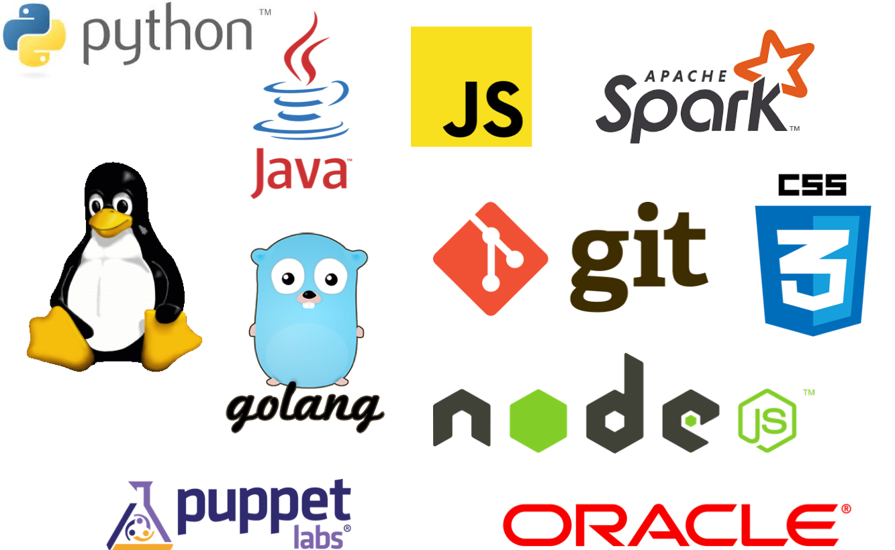

name: title .center[ .middle[ # Welcome to<br>Machine Learning: .di-orange[Data Foundation + Algorithms & Applications]! #### While we are waiting to start... ]] .medium-text[ 1. Check the event link in your calendar for the "Check In" box. Click the box. You have 24 hours to check in or you will be marked as a no show. 1. Download and unzip the two course material zip files from the Google drive link in the class meeting invite 1. Unzip the sf-ml-five-day.zip into your home directory 1. Unzip the data.zip into _~/sf-ml-five-day/src_ 1. Confirm that _~/sf-ml-five-day/src/data_ exists and has data files inside it ] ??? # Key Points: * Use this slide version to have people download the materials only (do Anaconda setup together). --- name: title class: center, middle # Machine Learning: .di-orange[Data Foundation + Algorithms & Applications] <br> ## Schedule<br> ### Start and Stop: 9am to 5pm ### Lunch: Noon to 1pm ### Breaks as needed (usually every 60-75 mins or so) ??? # Key Points: # Question to Ask: --- name: di class: middle, center ??? # Key Points: - DI has a long history with salesƒorce - 2,000 - 3,000 people at salesƒorce will be taking this course over the next year or two - Today is not about Machine Learning. - Today is about the underlying concepts that will set us up for Machine Learning tomorrow. - What data is, where data comes from, why we gather it # Question to Ask: --- class: middle, center ??? # Key Points: - These are some of the technologies that DI has delivered to clients around the world. # Question to Ask: --- # Technology Training with salesƒorce .center[ .middle[  ] ] ??? # Key Points: - DI and salesƒorce have been working together for years - Here are some of the technologies that DI has taught at salesƒorce # Question to Ask: --- # The Machine Learning Journey at salesƒorce * Learn how Einstein works and make it work for your products: solve problems and build innovative products with Machine Learning (Trailhead) * Provides a foundation on Machine Learning and related topics * Machine Learning: Data Foundation (2-day ILT) * Focuses on the theory of Machine Learning with the goal of creating a shift in mindset * Machine Learning: Algorithms & Applications (3-day ILT) * Takes deeper dive into Machine Learning algorithms and provides and opportunity for hands-on application ??? # Key Points: - At this point you should have completed the Trailhead videos, you have a basic understanding of what's going on. - The Machine Learning: Data Foundation class - gives you the tools for machine learning, a lot of statistics and probability, visualization tools, and programming tools - You'll have time (a few weeks or months) between the first and second class to dig in and use the tools you'll learn today and tomorrow. - There will be exercises and labs in this course, but they will be pretty structured - Machine Learning: Algorithms & Applications is a 3 day deeper dive into all of the tools you'll learn in this class with a more hands on approach - This Intro class sets the stage for everyone to be successful # Question to Ask: --- ### This course was created by DevelopIntelligence with participation from your salesƒorce experts: * Lidor Avigad, Senior Manager, Software Engineering * Ana Bertran, Principal Data Scientist, Infrastructure Analytics * Justin Donaldson, Principal Data Scientist * Tejaswini Ganapathi, Data Engineer ### Project Sponsors * Indira Uppuluri * Jayesh Govindarajan ### Program Manager * Michael Kohanfars ??? # Key Points: # Question to Ask: --- # Goals 1. Understand the role of Machine Learning 2. Where Machine Learning fits into Information Technology strategies 3. Technical and business drivers 4. What it takes to be Data-Driven 5. Basic workflows for experimentation and deployment 6. Difference between Supervised and Unsupervised learning 7. Visualization strategies for understanding 8. How Machine Learning is being used at salesƒorce 9. How Machine Learning can go wrong 10. Deepen your understanding of Machine Learning 11. Understand the process 12. More familiarity with tools 13. Practice various aspects of the approach 14. Familiarity with Algorithms 15. Importance of Data Cleansing ??? # Key Points: - Where did machine learning come from, everyone is trying to figure out how to wrap our heads around our data - How do the technical drivers and business drivers connect? - adding value to the business is the key, must understand business drivers in order to do that. - We want to become data-driven, but not data driven off the road. Some agency must be given up to our systems, but ultimately people still need to analyze results. - What does the daily life of a data scientist look like? - Basics of different types of learning. - Visualizing results - very important as we are visual creatures and will help make the business case - know when to tell the data to shut up # Question to Ask: --- class: middle, center # Video: Machine Learning At Salesforce # with Justin Donaldson ??? # Key Points: - This video is played from a file INSTRUCTOR MUST DOWNLOAD SEPARATELY (it's too big to go into github) - Download from Google Drive SFVideo1-DF.mp4 - this is a different video than used in the AA course. - This video is NOT on a hosted site yet, so there is no URL to share with students. - Local videos